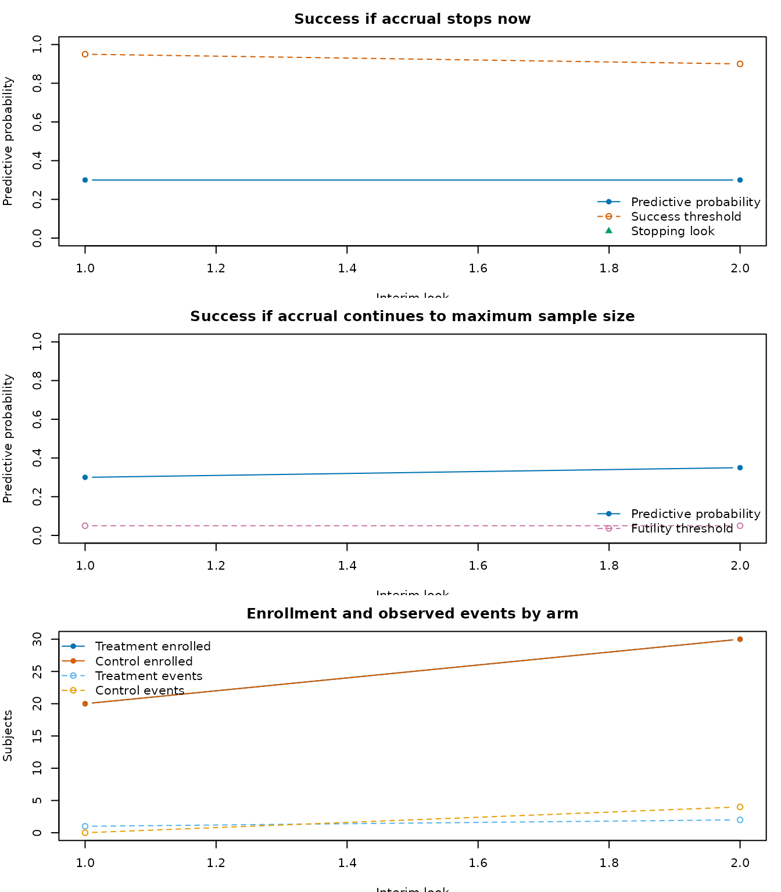

An adaptive trial is easier to assess when the final result can be connected back to the interim decisions that led to it. By default, survival_adapt() returns its compact, one-row final summary. Set return_trace = TRUE to request a goldilocks_trial object with that summary and a tidy row for each interim look.
A traced trial
This small Bayesian survival design has two interim looks. The treatment arm is assumed to have a lower cumulative failure probability by 24 months.
end_of_study <- 24
hazard_control <- prop_to_haz(c(0.20, 0.35), c(0, 12), end_of_study)
hazard_treatment <- prop_to_haz(c(0.12, 0.24), c(0, 12), end_of_study)
trial <- survival_adapt(
hazard_treatment = hazard_treatment,
hazard_control = hazard_control,
cutpoints = c(0, 12),
N_total = 80,
lambda = 8,
lambda_time = 0,
interim_look = c(40, 60),
end_of_study = end_of_study,
prior = c(0.1, 0.1),
block = 2,
rand_ratio = c(1, 1),
prop_loss = 0.05,
alternative = "less",
h0 = 0,
Fn = c(0.05, 0.05),
Sn = c(0.95, 0.90),
prob_ha = 0.95,
N_impute = 20,
N_mcmc = 20,
method = "bayes-surv",
empty_interval = "prior",
return_trace = TRUE
)
trial
#> Goldilocks adaptive trial
#> prob_threshold margin alternative N_treatment N_control N_enrolled N_max
#> 1 0.95 0 less 40 40 80 80
#> post_prob_ha est_final ppp_success stop_futility stop_expected_success
#> 1 1 -0.2791726 0.3 0 0
#>
#> Interim looks completed: 2The summary element is the familiar final analysis output. The trace element is an audit trail of the interim path.
trial$summary
#> prob_threshold margin alternative N_treatment N_control N_enrolled N_max
#> 1 0.95 0 less 40 40 80 80
#> post_prob_ha est_final ppp_success stop_futility stop_expected_success
#> 1 1 -0.2791726 0.3 0 0
trial$trace
#> look planned_N calendar_time N_enrolled N_treatment N_control
#> 1 1 40 5.079622 40 20 20
#> 2 2 60 8.684697 60 30 30
#> events_treatment events_control N_pending N_not_enrolled ppp_stop_now
#> 1 1 0 39 40 0.3
#> 2 2 4 54 20 0.3
#> success_threshold ppp_success_at_max futility_threshold decision
#> 1 0.95 0.30 0.05 continue
#> 2 0.90 0.35 0.05 continue
#> warning_count warning_messages
#> 1 0
#> 2 0
summarise_trial_trace(trial)
#> interim_looks_completed last_look last_decision final_N final_post_prob_ha
#> 1 2 2 continue 80 1
#> ppp_stop_now ppp_success_at_max warning_count
#> 1 0.3 0.35 0For each completed look, ppp_stop_now is the predictive probability of success if enrollment stops at that look. It is compared with success_threshold. ppp_success_at_max is the predictive probability of success if enrollment continues to the maximum sample size. It is compared with futility_threshold. The decision column records whether the design continued, stopped for expected success, or stopped for futility.
The trace does not retain posterior draws or completed imputed data sets. That keeps a traced trial small enough to inspect and share while leaving the underlying random-number path unchanged.
Visualizing the path
plot_trial_trace(trial)
The first two panels show the two predictive probabilities alongside their decision thresholds. The final panel shows enrollment and observed events by arm at each look. Warnings raised during a look, such as empty-interval handling, are recorded in warning_messages and remain visible as ordinary R warnings.
Summarizing many simulated trials
Traces are intended for examining individual trial paths. sim_trials() keeps its compact result data frame, which is more suitable for large operating characteristic simulations. plot_sim_stopping() provides a quick visual summary of stopping outcomes and enrolled sample sizes.
sims <- sim_trials(
hazard_treatment = hazard_treatment,
hazard_control = hazard_control,
cutpoints = c(0, 12),
N_total = 80,
lambda = 8,
lambda_time = 0,
interim_look = c(40, 60),
end_of_study = end_of_study,
prior = c(0.1, 0.1),
block = 2,
rand_ratio = c(1, 1),
prop_loss = 0.05,
alternative = "less",
h0 = 0,
Fn = c(0.05, 0.05),
Sn = c(0.95, 0.90),
prob_ha = 0.95,
N_impute = 20,
N_mcmc = 20,
N_trials = 500,
method = "bayes-surv",
seed = 5702
)
summarise_sims(sims$sims)
plot_sim_stopping(sims)For reproducible simulations, set seed in sim_trials(). The per-trial random streams make the compact simulation results reproducible across supported parallel backends. For a detailed explanation of the decision algorithm and calibration, see the Technical details of the Goldilocks design vignette.